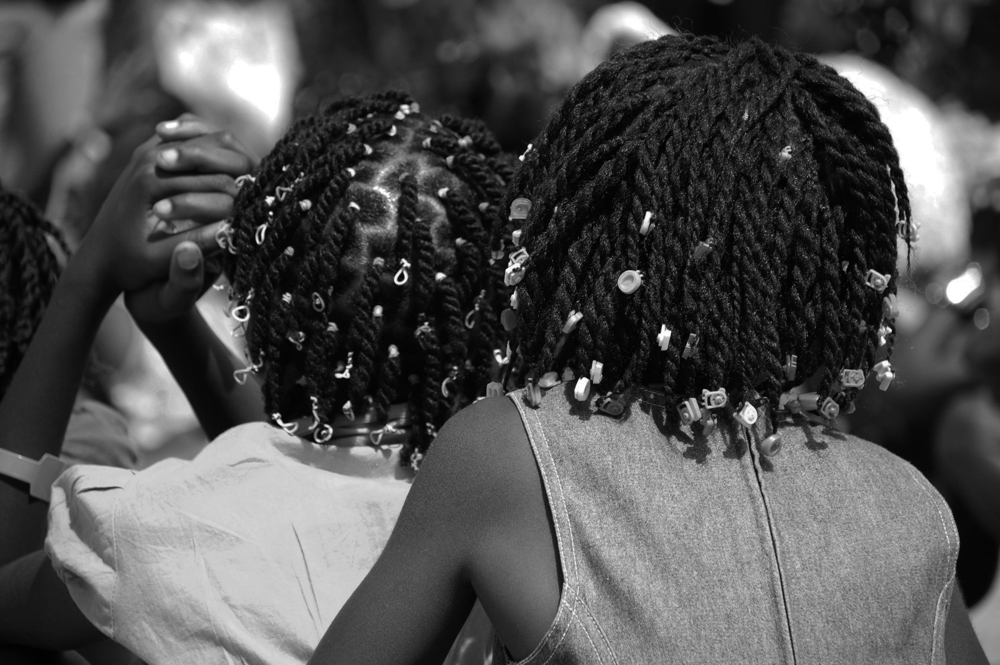

Galería
un Legado vivo
Las trenzas han resistido el paso del tiempo y siguen siendo una expresión poderosa de identidad y orgullo afrodescendiente.

Lo que una vez fue un símbolo de resistencia en tiempos de esclavitud, hoy se convierte en una reafirmación de herencia cultural.

Actualmente, estos peinados no solo mantienen su estética tradicional, sino que también han sido reinterpretados en la moda, el arte y los movimientos de empoderamiento.
Desde pasarelas internacionales hasta espacios comunitarios, las trenzas siguen contando historias, conectando generaciones y reivindicando una belleza que nunca debió ser silenciada